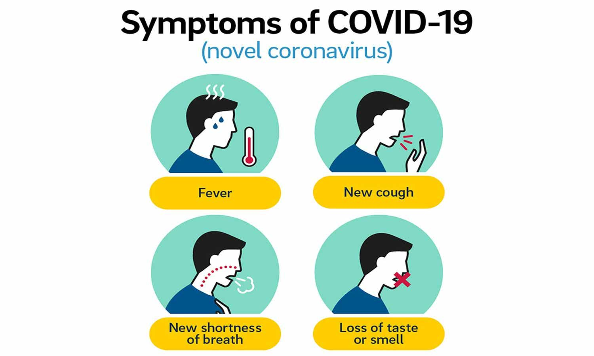
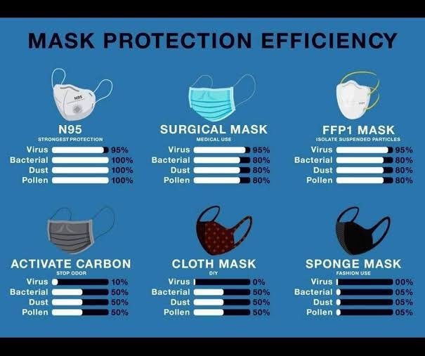
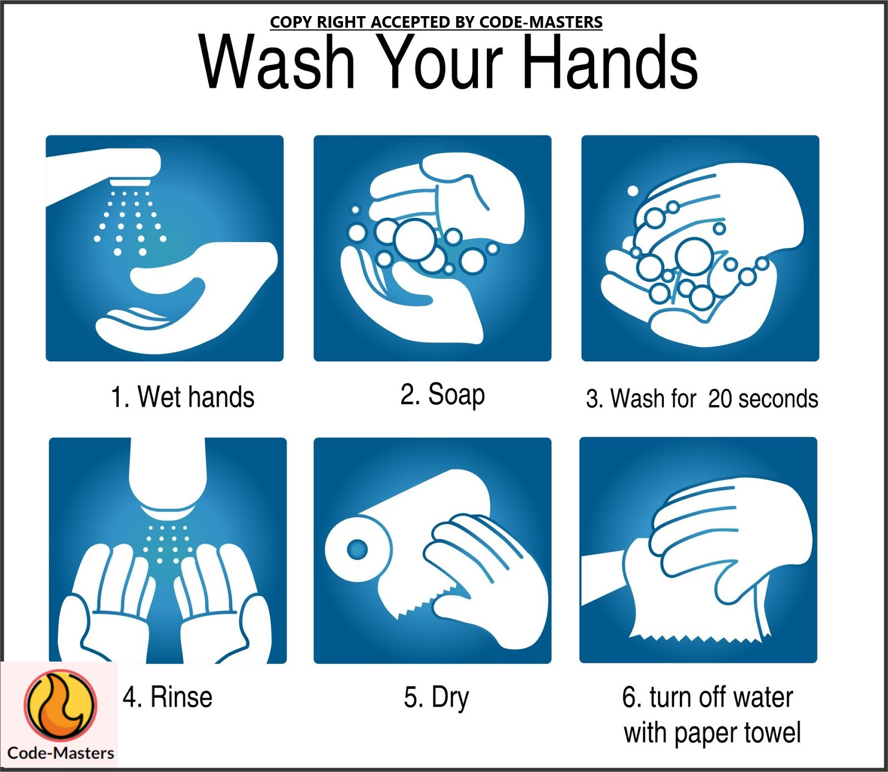

What is coronavirus?
Coronavirus disease is a respiratory illness which can spread from person to person. It is caused due to a novel coronavirus (newly discovered strain of corona virus) which has not been previously observed in any human. The disease is called as Covid-19 (‘CO’ stand for corona, ‘VI’ stands for virus, ‘D’ stands for disease and ‘19’ stands for 2019 as it was first discovered in 2019.
How does covid 19 transmit from one person to another?
Current evidence suggests that COVID-19 spreads between people through direct, indirect (through contaminated objects or surfaces), or close contact with infected people via mouth and nose secretions. These include saliva, respiratory secretions or secretion droplets.
These are released from the mouth or nose when an infected person coughs, sneezes, speaks or sings, for example. People who are in close contact (within 1 metre) with an infected person can catch COVID-19 when those infectious droplets get into their mouth, nose or eyes.
To avoid contact with these droplets, it is important to stay at least 1 metre away from others, clean hands frequently, and cover the mouth with a tissue or bent elbow when sneezing or coughing.
When physical distancing (standing one metre or more away) is not possible, wearing a fabric mask is an important measure to protect others. Cleaning hands frequently is also critical.
Symptoms of coronavirus
Well, you might think what will happen to you when you get coronavirus, so here is the symptoms and a chart to show what are the symptoms of coronavirus
Most common symptoms:
- ⦁ Fever
- ⦁ Dry cough
- ⦁ Tiredness
- ⦁ Less common symptoms:
- ⦁ Aches and pains
- ⦁ Sore throat
- ⦁ Diarrhoea
- ⦁ Conjunctivitis
- ⦁ Headache
- ⦁ Loss of taste or smell
- ⦁ A rash on skin, or discolouration of fingers or toes Serious symptoms:
- ⦁ Difficulty breathing or shortness of breath
- ⦁ Chest pain or pressure
- ⦁ Loss of speech or movement
- ⦁ Seek immediate medical attention if you have serious symptoms. Always call before visiting your doctor or health facility.
- ⦁ People with mild symptoms who are otherwise healthy should manage their symptoms at home.
- ⦁ On average it takes 5–6 days from when someone is infected with the virus for symptoms to show, however it can take up to 14 days.

In the below image it is going to show you how to wash your hands.
Mask's you should wear & not wear during coronavirus.
There are a lot of diffrent mask's made and you mabye wondering what mask will protect you the most and which mask will not protect you Well here is a chart to show which mask will protect you the most:

Credit: https://aidwaycares.com/
In the above chart you see the N95 mask is the most protective mask and the sponge mask is the least protective mask.
Ways to prevent coronavirus:
In the below image it is going to show you how to wash your hands.

This is a live video with the country with most COVID-19 cases